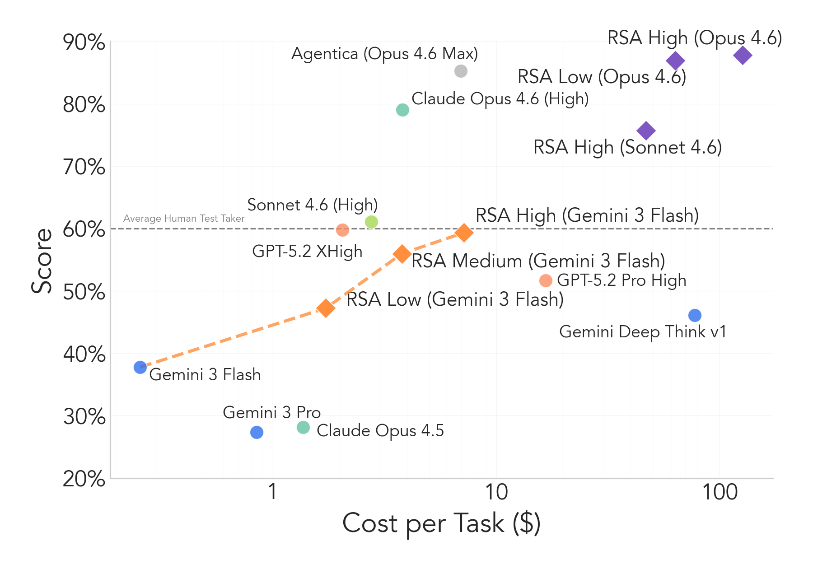
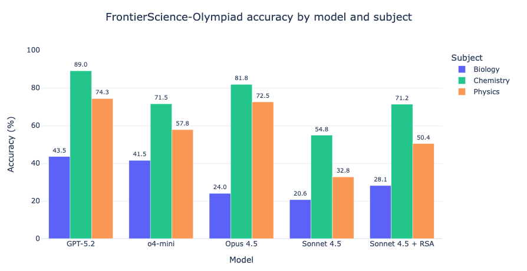
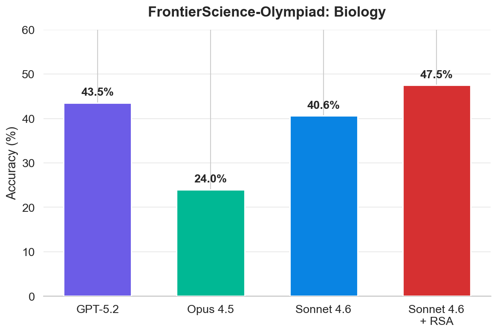
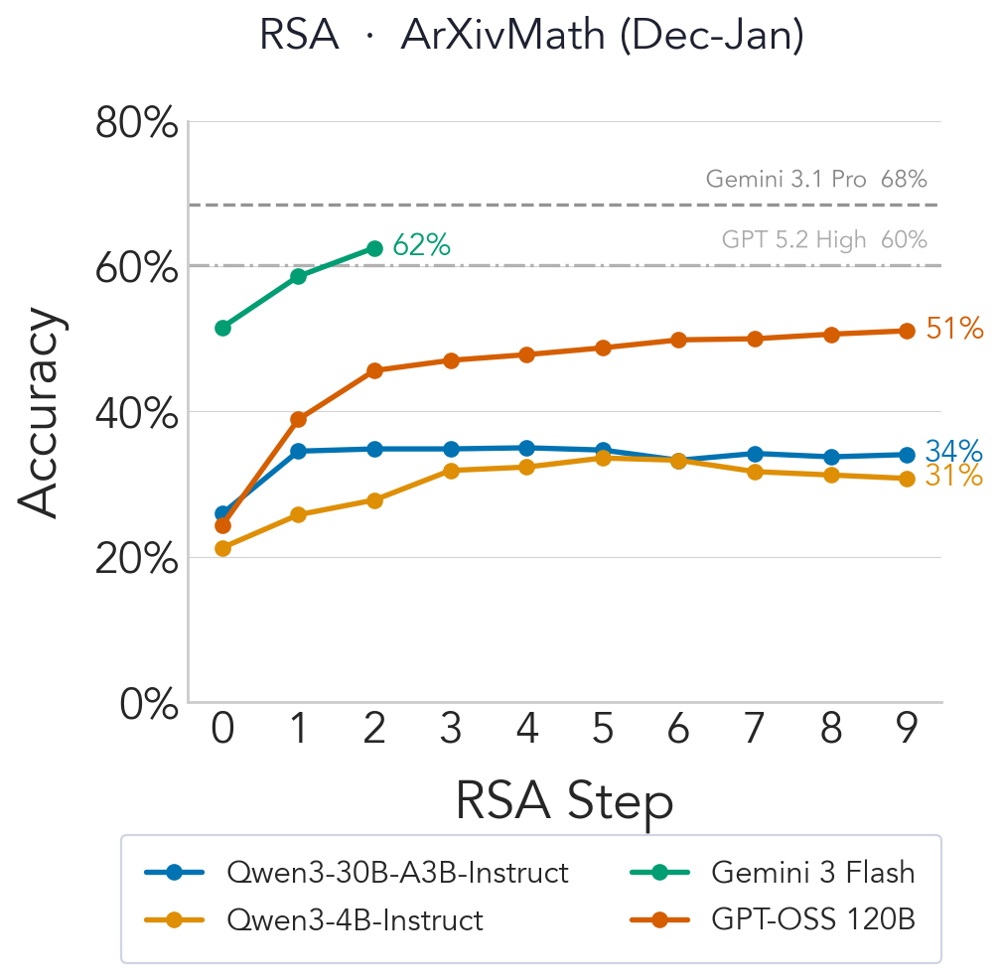
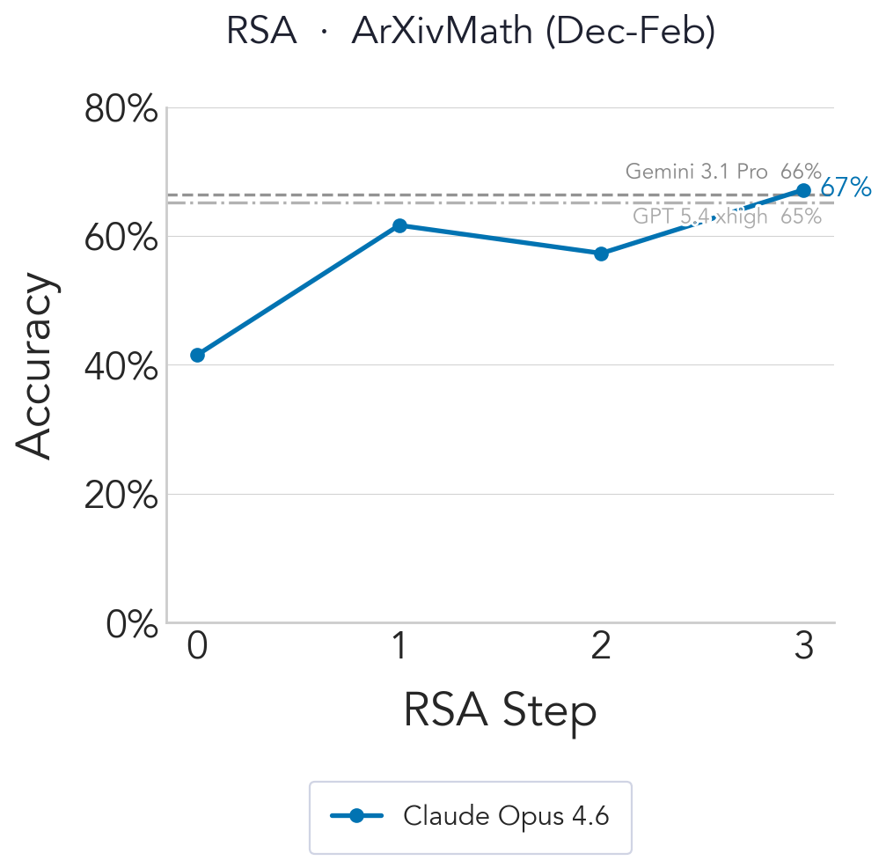
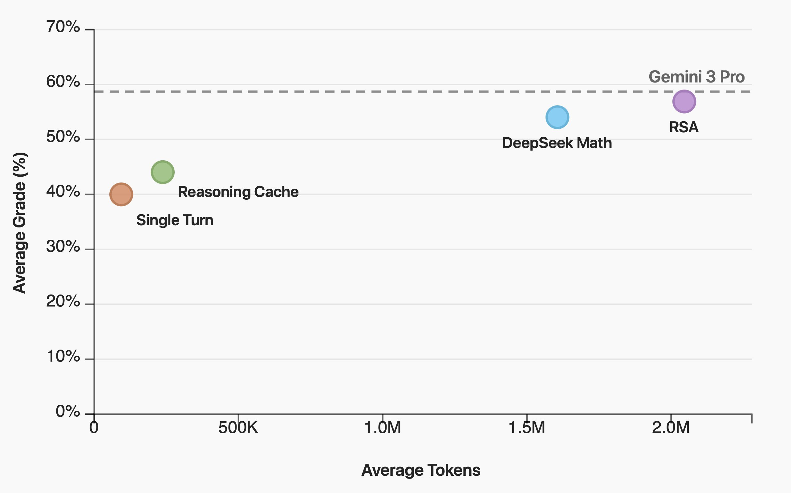

We probe the limits of Recursive Self-Aggregation on challenging reasoning benchmarks and demonstrate its broad applicability.
The frontier for improving LLM reasoning has moved towards scaling compute at test time. Test-time compute is typically controlled through harnesses — external control flows that orchestrate multiple model generations. In single-turn settings, harnesses fall within two broad categories: parallel approaches that generate multiple independent responses and combine them, and sequential approaches that iteratively refine a single candidate. In our work Recursive Self-Aggregation, we proposed a simple harness that combines the benefits of both. In this post, we present new results on harder reasoning benchmarks, demonstrating RSA's potential to tackle challenging practical reasoning problems across scientific domains and mathematics.
Recursive Self-Aggregation (RSA) is a hybrid test-time scaling strategy that combines sequential and parallel components. The key idea is to use the model to aggregate subsets of its own responses into a combined answer, then repeat this recursively.
Given a query $x$ and a pretrained LLM $p_{\theta_\textrm{ref}}$, RSA maintains a population of $N$ candidate solutions $\mathcal{P}_t$ at each step $t$. The model is given the question together with $K$ solutions from the current population and prompted to produce a refined answer, forming a new population $\mathcal{P}_{t+1}$.
Initialization. Sample $N$ responses to form the initial population $\mathcal{P}_1$:
$$\tau_i^{(1)} \sim p_{\theta_\textrm{ref}}(\,\cdot \mid x), \qquad \mathcal{P}_{1} = \bigl\{\tau_1^{(1)}, \dots, \tau_N^{(1)}\bigr\}.$$Repeat steps 1–2 for $t = 1, \dots, T{-}1$. The final answer is drawn from $\mathcal{P}_T$ by uniform sampling or majority voting.
For full details and experiments see arxiv.org/abs/2509.26626.
ARC-AGI-2 is a benchmark for evaluating reasoning in AI systems. The public evaluation set contains 120 tasks; each provides a few training examples and one test instance. The goal is to infer a transformation rule from the examples and apply it to the test. The benchmark targets symbolic interpretation, compositional reasoning, and contextual rule application.
High-performing methods have typically combined language models with program synthesis and domain-specific languages. We investigate whether RSA can push performance further — RSA does not require access to any additional tools.
We run experiments with three frontier models: Gemini 3 Flash, Claude Sonnet 4.6, and Claude Opus 4.6. For Gemini Flash we use $N{=}8$, $K{=}4$, $T{=}10$ (RSA High = 10 steps, Medium = 5, Low = 3). For Sonnet and Opus 4.6 we use $K{=}4$, $T{=}3$ (RSA High: $N{=}16$; RSA Low: $N{=}8$) due to cost constraints.

RSA provides significant improvements across all three systems. Claude Sonnet 4.6 gains over 15% in just three steps. With Claude Opus 4.6 we reach 87% on the public set with no tool access. RSA does increase computational cost substantially; improving its efficiency remains an open direction.
FrontierScience-Olympiad contains short-answer questions at the difficulty of the International Physics, Chemistry, and Biology Olympiads: 50 physics, 40 chemistry, and 10 biology problems.
RSA boosts performance by 7–18%, moving Sonnet 4.5 (no extended reasoning) toward competitiveness with the best frontier models running at high reasoning effort.

Switching to Sonnet 4.6 at high reasoning effort continues to yield gains, surpassing the best-performing frontier models on the Biology subset. We only evaluated RSA with a high-reasoning model on biology due to limited API credits; full results will follow.

All Sonnet results use $N{=}16$ rollouts per problem. For the 10-problem biology subset, each accuracy is the mean over 160 rollouts. RSA uses $K{=}4$ and $T{=}10$.
ArXivMath is a recently released benchmark of final-answer research-level math questions sourced from arXiv preprints, updated monthly for low contamination. As of February 2026 it contains 40 questions from December 2025 (17) and January 2026 (23).
We evaluate RSA with three models released before the benchmark: Gemini 3 Flash, GPT-OSS-120b, and Qwen3-4B-Instruct-2507, using $N{=}16$, $K{=}4$. Gemini 3 Flash is limited to 3 steps due to resource constraints.

We then evaluate Claude Opus 4.6 with $N{=}16$, $K{=}4$, $T{=}4$, including the February subset alongside December and January. RSA achieves state-of-the-art on the leaderboard, beating Gemini 3.1 Pro and GPT 5.4 (xhigh).

adaptive reasoning parameter
rather than the configuration in the official MathArena results
(details).
This yields slightly lower initial-step performance; we expect better results with the
corrected sampling parameters.
Work by the LLM Provers Team — see the QED-Nano blogpost for full details.
QED-Nano trains a compact 4B model to write Olympiad-level mathematical proofs via three steps: (1) SFT distillation from DeepSeek-Math-V2, (2) RL with dense rubric-based rewards, and (3) training with a reasoning cache (Wu et al., 2026) that decomposes long proofs into iterative summarize-and-refine cycles for continual test-time improvement. Among all tested scaffolds, RSA delivers the best performance when the token budget is unconstrained.

These results highlight the potential of RSA when compute is unconstrained. Improving its efficiency for better scalability and extending aggregation ideas to multi-turn settings are exciting open directions. If you are interested in tackling hard problems that require extensive reasoning — let us know!